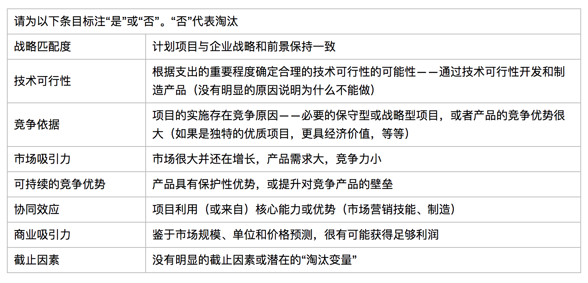

一、探索正确的组合管理流程
A.什么是组合管理
1.新产品组合管理是一个动态的决策过程，活跃的新产品和研发项目需要经常进行调整。新项目得到评估、筛选、按优先级排序，在研项目可能会被调整为加快进程、淘汰或取消优先级，进而，资源会被重新配置到活跃项目中
2.决策过程的特点是：信息的不确定性和多变性，机遇的动态性，多重目标和战略考量，项目间的独立性，决策人和决策地点的多样性
B.缺乏有效组合会出现什么状况
1.薄弱的组合管理会使淘汰新产品项目变得难上加难
2.会导致严格有力的决策点缺失，从而削弱项目筛选的决策力
3.会导致企业由于错误的原因，项目筛选决策不正确
4.不会产生项目选择的战略方向
C.组合管理至关重要
1.组合管理的重要性体现在：
- 实现项目与投资的平衡
- 企业内部可以横向和纵向的评估项目优先级
- 项目筛选更具客观性
D.组合管理面临的主要挑战
1.项目组合无法反映公司经营战略，公司业务目标/战略与资金所用之处脱节情况严重
2.低质量的项目组合，半数项目都是错误的，包括我们的一些大项目
3.我们有的是通道，而不是漏斗，通过/淘汰决策点经常是无效的
4.资源稀缺与重点缺失
5.产品开发平衡比
E.一些概念
1.经营战略：详细说明了事业部的目标、方向以及侧重点
2.事业部（Business Unite,BU）或战略事业部（Strategic Business Unite,SBU）：企业中的最小部门，主要负责执行组合管理
3.新产品战略：是企业经营战略的组成部分（或分支）。具体说明了新产品目标、方向以及重点（也就是产品开发工作的重点）。解释了研发水平的需求和新产品支出的重点方向（如特定市场或产品种类上的支出）
4.组合管理流程：是项目筛选和组合管理的全部方法。它包括关卡或门径管理流程、组合审核、资源配置和组合模型
5.组合模型：是用于项目筛选和组合审核的具体模型或工具，包括评分模型、泡泡图、图解和表格、财务模型和战略方法
6.组合审核：针对所有项目组合的定期审核。审核间隔为一年，半年或一个季度
7.资源分配：是开发资源（研发、市场、资金）分配到特定活动、项目甚至业务的决策过程
二、历经30年的组合方法研发
A.研究组合管理方法的新进展
1.财务或经济模型
- 1）运用到传统计算方法，比如回收期、盈亏平衡分析、投资利润率和折现现金流（现金流量折现，包括净现值Net Present Value,NPV与内部收益率Internal Rate of Return,IRR以及各种财务比率如生产指数 ）
- 2）通过以下做任一种来实现：
- 确定每个项目的度量标准（如净现值）并且与截止标准进行比较（如净现值必须高于某值）
- 确定每个项目的度量标准（如净现值）并且运用于项目排序。通过排序分配项目资源直至资源耗尽
2.评分模型与检核表
- 1）评分模型与检核表属于“收益衡量技术”的一般范畴，需要信息面广的管理团队通过不同的特征来评估项目
- 2）较少依靠传统的经济数据，更多依赖的是战略变量的主观说明，如企业目标的匹配度、比较优势与市场吸引力
- 3）运用：根据一些绝对标准或截止标准确定通过/淘汰的决策点；或者通过简单的项目排名分配资源直至资源耗尽
3.概率性财务模型
- 1）蒙特卡罗模拟法，为每一个财务变量提供多重数据。计算机模型运用随机数字模拟分析这些数据，生成该项目可能遇到状况的多种分析方案
- 2）决策树分析，每个分支的可能性、每个决策点或活动可能产生的结果，以及每种结果带来的财务影响，都会被一一标注在分支上
- 3）期权定价理论（或实物期权），新产品项目投资决策是在增量中产生的，而不是绝对地以“全部都有或一无所有”的方式进行；管理层在某一时间“买进项目”
4.行为研究法：使管理者想法达成一致，包括
- 1）调整后的德尔菲法
- 2）Q类方法
- 3）成对比较模型
5.数学优化法
- 1）数学优化模型（MOMs）也被称作最优解决方案或运筹学研究，也称为原始组合模型。
- 2）在资源约束条件下（如人日或资金），为使某种目标最大化（如利润）而寻求最优项目组的数学运算。运用的技术包括线性和数学编程、统计决策理论、博弈论和概率论（如马尔柯夫过程）
6.决策支持系统（DSS）：是允许管理层干预的数学模型
7.绘图方法：典型的绘图方法是用X-Y坐标表示项目的泡泡图，是原始的战略事业部组合模型的延伸
B.理论与实践间的鸿沟
1.项目筛选和项目优先级排序是所有新产品管理方案中的薄弱环节
C.组合管理：没那么简单
1.与传统组合管理方法的不同之处是在业务部门进行资源配置不同，研发组合管理的重点是新机遇、新产品、新投资
2.决策制定的环境是动态的。市场或技术检测的不断完善以及新的竞争和市场信息的呈现，组合中项目的现状和前景变化无常
3.组合中，项目完成情况处于不同阶段
4.资源竞争的问题很复杂，因为资金、人力、和时间都是有限的
5.新产品项目组合中，项目是互相关联的
6.组合管理对公司业务来说至关重要
D.有效的组合管理的要求
1.公司的长期目标、短期目标和战略，必须是新产品（或研发）组合筛选的基础
2.高层管理者是战略的驱动者，而且必须深入参与新产品（或研发）项目筛选的决策过程中
3.公司高层管理者与研发管理者间需要良好的沟通和理解
4.项目组合方法必须与公司业务决策框架相吻合
5.组合管理方法应当仅应用于信息展示而不用于最优化决策的制定
6.筛选方法必须适应变化以及目标和操作者的互动
7.组合筛选方法必须适应企业不同层面的决策制定
8.通过筛选技术进行风险处理
9.需要组织结构和适当的支持系统
E.管理者要做什么
1.三个主要目标
- 1）价值最大化：通过资源配置使组合价值最大化
- 2）实现平衡性：开发平衡的组合——根据参数实现项目的预期平衡
- 长期项目对短期、快速项目
- 高风险小项目对低风险大项目
- 业务应处于不同市场（不要将所有资源放到一个市场）
- 不同的技术或技术类型（如萌芽期的、进行中的、基础性的）
- 不同的项目类型，新产品、改进型、成本降低型、基础研究型
- 3）战略一致性：最终的项目组合在战略上一致并能够真正反映经营战略
三、组合管理方法：组合价值最大化
A.运用净现值获取性价比
1.大多数公司的新产品流程需要计算净现值，这是商业论证的必要组成部分。通常在项目进入高支出阶段之前进行这种计算，也就是开发阶段
2.如果资源没有限制，决策制定就简单了：实施净现值为正的所有项目，计算出净现值的总和，这就是全部组合的经济价值
3.性价比指数=项目净现值/被分配给项目的总剩余资源
4.优点：
- 要求组合中的所有重要项目都进行净现值计算，促进了流程的一致性、纪律性和精确性
- 要求项目团队在项目进入重要的开发实施之前就要面对财务的现实情况
- 促使一个具有经济吸引力的项目组合产生
- 战略优势：涉及资金的时间价值；对于正在开发进程中的项目有利，对于其他项目一视同仁；此方法为每个项目明确了即时资源需求和资源需求总和
5.缺点：
- 仅依靠财务，与单纯的数据输入差不多
- 仅假设了财务目标
- 计算中的一个重要数据是资源评估——即时资源与每个项目仍需支出的资源数据也不精确
B.预期商业价值
1.预期商业价值法（ECV）的目的是，使项目组合的预期价值或预期商业价值最大化
2.ECV=[(PV*Pcs-C)*Pts]-D
- ECV，项目的预期商业价值
- PV，项目上市后现金流的价值
- Pcs，商业成功概率
- C，项目仍需求的商业化或上市的成本
- Pts，技术成功概率
- D，仍需支出的开发成本
3.优势：
- 将风险和可能性作为参与因素——商业和技术两方面，这是普通的净现值法和电子数据表格的计算不具备的
- 基于决策树法，预期商业价值法使我们认识到如果项目中途暂停，某些支出就不会发生，并且通过/淘汰决策是一个阶梯式的或递进的过程。使我们认识到项目投资的期权性——在某个时间“买进”项目
- 引进了战略重要性指数
4.缺点：
- 依赖财务及其他定量数据
- 对于概率的处理方法。如何定量地评估项目的成功概率
- 不注重组合的平衡性——在高风险与低风险项目间或者在市场与技术间保持适当平衡
C.生产率指数
1.生产率指数（Productivity Index,PI）是上述预期商业价值方法融入项目风险性和可能性因素后的变体。在既定资源限定的条件下，生产率指数同样试图使组合的财务或经济价值最大化
2.PI=[ECV*Pts-R&D]/R&D
- ECV，项目预期商业价值
- Pts，技术成功概率
- R&D，项目剩余研发成本
D.期权定价理论
1.期权定价理论（Options Pricing Theory,OPT）或真正的期权方法认为，管理层在每次渐进投资决策之后可以将项目淘汰
E.动态评级排序列表
1.同时根据几种不同的标准对项目进行评级排序，而不像体系成熟的多重标准的打分模型那样复杂且耗费时间
2.标准包括利润率及回报衡量标准、战略重要性、便捷和速度以及其他排序优先项目所具备的特性
3.4种主要指标为：
- 项目未来收的净现值，减去所有未支付支出
- 内部收益率计算与净现值计算所运用的数据相同，但得到的结果是百分比收益
- 项目的战略重要性——对于公司经营战略，项目重要性和一致性的体现
- 技术成功概率
F.用财务方法进行项目评估的弊端
1.财务数据经常是不准确的
2.财务方法中依赖的数据错误率高
3.对重大的有突破性项目不利，而改进幅度小、风险低的小项目评分会相对较高
G.评估方法：评分模型
1.建议：
- 在早期阶段的决策点研究财务数据和标准，但不要将它们作为决策的全部依据
- 想办法提高信息质量（尤其是市场信息）
- 对项目整个周期进行跟踪评估
2.比较重要的成功因素与新产品利润率相关联：
- 拥有独特的优质产品
- 定位于具有吸引力的市场
- 发挥企业内部优势
2.评判标准清单——通过对高利润、高成功率和较差项目间的思考和比较获得的标准，用以评估项目
3.赛拉尼斯公司对项目进行优先排序的5个重要因素：
- 企业战略匹配度
- 战略影响力
- 技术成功概率
- 商业成功概率
- 对企业的回报
4.杜邦评分模型：
- 战略一致性
- 价值
- 竞争优势
- 市场吸引力
- 与现存供应链的适应性
- 收支平衡的时间
- 净现值
5.较小的高科技公司的评分模型：
- 项目匹配企业战略吗？匹配程度如何？
- 市场潜力在哪儿？市场有多大？
- 财务评估准确吗？
- 我们有研发支持吗？我们可以做这个项目吗？
- 财务指数=S*Pcs/[D*(1-Pts)]
- S，产品预期年度销售额
- D，开发成本
- Pcs，商业成功概率
- Pts，技术成功概率
6.综合性的最佳评分模型：
- 战略一致性和重要性
- 产品和竞争优势
- 市场吸引力
- 核心能力的影响力
- 技术可行性
- 财务收益
H.开发并使用评分模型
1.要在所有项目间进行比较。调整加权值，评分模型也会随之改变，项目吸引力分数就失去了直接可比性
2.确定评分模型加权值的一些方法：
- 使用调整后的德尔菲法
- 投票
- 使用研究结果
- 使用商业可能模型
3.组合分析是一次关键性的全天会议，会议邀请产品群组长以及其他了解相关信息的管理者共同参加
4.促使一些企业开发使项目审核过程更加流畅的方法：
- 电子把关
- 把关者预评分
- 如果你采纳了评分模型方法，建议：
- 把关者或高管必须完成评分
- 评分应该在关卡审核会议上进行
- 在会议上使用评分卡，决策制定者可以记录每个问题的评分
- 项目团队预评分
I.对评分模型的评估
1.主要优势：
- 不会过分重视财务标准，这些数据的可靠性在项目早期阶段是不确定的
- 实现多重目标，如战略重要性、竞争优势和市场吸引力
- 将通过/淘汰和优先排序决策的复杂问题减少至几个可处理的具体问题
- 通过完整的标准体系对每个项目进行评估，确保没有忽略关键问题
- 强制性地使管理层对项目进行深入思考并提供了讨论平台
- 是对项目优劣势进行诊断评估的优质辅助工具
- 得出的评分值单一，对于项目排序操作来说，评分数据非常有用
2.管理者担忧：
- 不切实际的精准性
- 晕轮效应：如果一个项目某项标准的评分高，那么其他标准的评分也往往都很高
- 稀缺资源配置效率
I.检核表作为组合工具
1.“必须满足”标准的通用清单

2.作为淘汰劣质项目的筛选工具，检核表方法在项目审核会议中是最有效的，但在项目优先排序中的使用却不理想，因为没有0-100分值的项目评分作为依据进行项目的评级排序
J.成对比较
1.管理者在项目创意间进行对比，每次一组。通过讨论确定每组中的赞成票。然后根据每组成对比较中投票为“是”的次数进行项目的评级排序
四、组合管理方法：寻求项目的正确平衡
A.泡泡图
1.典型的泡泡图是在二维X-Y坐标中表示项目进展，X轴和Y轴可以表示任何坐标参数。经常被用到的是风险与回报，圆圈或气泡代表单个项目，它们的大小体现出第三个重要的坐标参数，如项目的资源需求
2.几乎没有企业将泡泡图作为企业最主要的项目筛选方法来使用。泡泡图更多地被用于展示组合详细 信息的讨论工具，即“是什么”
3.净现值计算中，不同的模型和企业所处理风险的方式不同：
- 将概率计入净现值计算
- 运用风险调整后的贴现率
- 使用加权概率现金流
- 运用蒙特卡罗模拟法
- 建立决策树
- 使用可能性高/低法
- 采用非财务收益评估法
- 使用评分模型中的衡量标准进行收益评估
B.泡泡图概要
1.受欢迎的泡泡图衡量标准

C.关于平衡的一些争议
1.企业的生存比简单的寻求高价值组合更加重要，平衡是一个关键性议题
2.在寻求平衡的过程中还存在很多问题
- 一些比较受欢迎的泡泡图，依靠大量财务数据，这些数据经常无从获取或者不确定性极高
- 存在信息量过剩的问题
- 直观的平衡模型，只是用于展示数据，而不是决策模型
- 图表的使用方式都不是特别明确
- 很难对“适当的平衡”进行定义
3.平衡图表的其他优点是：
- 它们与组合管理中另外两个目标的实现方法紧密相关
- 同时也是使项目组合与战略保持一致的有效监管工具
五、组合管理方法：与企业战略紧密联结
A.战略与组合联结的方法
1.在组合管理中将战略与组合相联结并实现战略一致性的3个主要目标：
- 战略协调性是最简单直接的目标
- 战略贡献是复杂和精细的目标
- 战略优先级更加复杂
2.通常采用3种方法实现战略一致性：
- 1）自上而下法：从企业的愿景、目标和战略入手，并从这3方面决定新产品方案与/或资源配置情况
- 产品路线图：企业与新产品战略的制定有助于确定企业的工作方案或新产品开发平台
- 战略桶模型：这个模型重点在资源配置方面，主要回答了如下问题：如果这是我们的战略，那么我们应该怎样支出开发资金，我们的投入资金应如何投入不同的市场、技术或项目类型中
- 2）自下而上法：以新产品建议书的形式表现出的一系列机会，侧重于项目筛选
- 3）上下结合法
B.企业开发新产品战略的速成指南
1.新产品目标是由企业目标及其战略发展而来，主要体现在：
- 过去X年中新产品投入市场的收入占公司年收入的百分比
- 新产品的利润占公司总利润的百分比
- 新产品为公司带来的业务增长百分比
2.颠覆性技术是一种新技术，它的存在会威胁到现有技术，因为新技术会满足许多使用者的需求，但同时也具备其他优点
3.颠覆性技术框架是：
- 一种能够重构市场并产生市场机遇与陷阱的方法
- 一种能够识别企业未来战略选择的方法论
- 一系列能够引领企业并规避风险的原则
4.“从优势进攻”：抓住优势与竞争力可以提升新产品成功概率与盈利能力。要全方位地审视企业的优势和劣势
5.企业优势（或商业地位），权衡标准：
- 衡量技术优势的能力
- 衡量市场优势的能力
- 战略衡量——获取产品优势与差异化的潜在能力
C.制定进攻计划
1.市场机遇分类：
- 持续性机遇，存在于现有市场与新设定的市场中，是可以使新产品增值的机遇
- 对现有市场的颠覆，包括现有市场与其他市场的颠覆性威胁
- 新市场，对你的企业乃至整个世界来说都是新鲜事物
2.制定进攻规划或路线图，包括能够在既定市场中取得成功的主要进攻性战略或方案的制定：特定新产品、平台、项目及相应的时间设置
3.是否继续进行某些项目的开发，是自然而然的决策过程：如果目标是进入某特定竞技场并在市场中取得成功（或许是守护某市场），那么受战略影响，这些项目就变为“必须进行”的项目，其他项目就显得 没那么重要了
4.PDMA将平台性定义为“产品家族中一系列产品所共享的设计或组件”
D.产品路线图与技术路线图
1.产品路线图只是管理层如何达到理想目标的简单思路，是有助管理层确定是否具备实现目标能力的实用工具
2.产品路线图通过时间轴表示产品与产品投入市场的时间——回答了“产品类别如何升级”“产品如何开发”以及“开发什么产品”的问题
3.技术路线图是由产品路线图衍生而来的用于说明实现产品目标的方法
E.战略桶：有效的自上而下方法
1.战略桶的建立方式：
- 1）首先，确定企业愿景与战略，进而确定新产品战略
- 2）接下来，管理层对研发资金与新产品资源的分配进行决策：投入哪种类型的项目、哪个市场、哪个产品线等
- 3）资金分配：确定各个战略桶的合理资金支出水平
- 4）接着，在战略桶中对项目进行优先排序，结果是：
- 形成多个项目优先排序名单，每个战略桶中有一个项目组合
- 不同项目间不存在竞争
- 年末的资源支出与预测或目标资源分解保持一致，新产品支出能够反映经营战略
2.战略桶模型能够将抽象的经营战略转变为清晰定义的竞技场（战略桶），并进行资源分配决策，主要步骤为：
- 1）制定发展愿景与战略
- 2）根据关键战略因素，进行强制性的资源配置，需要权衡：
- 战略目标：管理层针对战略目标进行资源分配
- 产品线：管理层针对产品线进行资源分配
- 市场细分：公司业务位于具有不同程度吸引力与潜力的细分市场中，因此管理层针对不同的细分市场进行资源分配
- 技术类型：公司业务的开发依靠 不同类型的技术或技术平台
- 项目类型：对新产品开发资源投入的百分比是多少？平台开发呢？基础研究呢？维持型项目呢？流程开发型项目呢？
- 3）定义战略桶，不同类型战略维度，可用于确定不同类型的战略桶
- 4）决定当前资金支出
- 5）决定预期支出
- 6）找出差距
- 7）利用战略桶对项目进行排序
- 8）做出必要的调整
3.资源配置方法：
- 讨论与达成共识
- 评分法
- 战略实施
- 指导性决策规则
F.自上而下法的优点与缺点
1.把将实施的项目（资金支出的去向）与企业目标（资金应该支出在哪里）结合起来
2.需要使用大量的模型和复杂的框架：
- 需要确定经营战略和新产品战略
- 需要管理者在战略实施方面进行艰难的选择
- 战略桶模型需要管理者对资金的支出情况详细了解——更具挑战性的选择
- 产品路线图法需要管理者对产品和平台进行长期投入并有很强的决策力——这仍是大难题
3.产品路线图法的3个不足之处：
- 自上而下法中的项目组合不应该总是让战略牵着鼻子走
- 产品路线图比较僵硬死板，阻碍了创造力与进取精神的发挥
- 环境是动态的，事物也在随之改变
4.战略桶法的不足：
- 如果不首先了解每个战略桶中的项目，不确定项目的优劣程度，怎么能够根据战略桶（比如通过项目类型）进行资源分配？
- 次级优化问题
- 应该采取怎样的措施
- 战略桶模型过于复杂，对管理者来说理解和使用的难度大，某些管理者难以招架众多的实施步骤和资源分配需求
5.战略桶模型的优点：
- 运用项目组合法对争夺同种资源的所有开发项目进行全面考虑
- 能够将不同的标准运用于不同类型的项目
G.平台型项目的特殊案例
1.战略桶模型尤其适用于平台型项目
2.可以同时建立3种不同的组合
H.自下而上法：将战略标准纳入项目筛选工具中
1.能够实现这些多重目标、使用最广泛并且最适合的项目筛选方法是评分模型法
I.自上而下-自下而上法
1.主要特点是：
- 能够确保战略一致性，最显著的是，资金分配可以反映企业的战略优先级排序——这是战略桶的优势，却是自下而上法的不足
- 能够将特定机遇（活跃项目与潜在项目）作为资金支出与项目优先排序决策的主要考虑因素。这是自下而上法的优势，也是自上而下法的不足
2.首先从企业战略着手：使用战略竞技场、优先排序。然后，围绕企业战略，针对不同的项目类型制定尝试性的支出目标分解
J.支出问题的计算
1.确定开发支出总量（针对研发、市场与资金支出）的一些方法：
- 同类比较：了解行业中的竞争者支出问题是多少
- 目标和任务：从经营目标着手
- 历史回顾：对上一年度的支出总量进行增减微调
- 机会主义原则：支出不要超过公司的现金流入量
- 以结果为基础：每年将更多资金投入产品开发成功的业务中
- 企业规划模型
六、组合管理方法的使用与实施结果
A.组合管理方法的满意度
1.组合管理最大的优点是，能够适用企业的管理模式
2.组合管理方法有如下特点：
- 被认为是有效的（例如，可以帮助制定正确的决策）
- 在一定程度上可以用于进行通过/淘汰决策
- 效率不是特别高（有时候用起来费力且无效）
- 不容易发现组合中的主要问题
- 对于使用者来说，易用性不强
- 不容易被高层管理者理解
3.表现最佳的企业通常：
- 制定的组合方法能够解决组合中的关键问题
- 将本企业使用的方法评估为优秀
- 将本企业使用的方法强烈推荐给其他企业
B.组合方法的使用特性
1.表现最佳企业特点：
- 制定清晰完善的组合管理方法
- 管理层认可组合管理方法并采取措施支持方法的实施
- 具有清楚规划和流程的方法
- 将所有项目视为一个组合的方法（将所有项目考虑在其中）
- 制定的组合管理方法持续运用于所有适当的项目
C.表现最佳的企业使用哪些方法
1.表现优秀的企业很少将财务模型作为主导型组合工具。相比而言，表现较差的企业更加侧重于使用财务工具
2.与业绩较差的企业相比，表现优秀的企业更加倾向于根据企业战略进行资源分配以及项目组合决策
D.具体的项目筛选标准
1.普及程度最高的项目组合评判标准：
- 战略匹配性与强化核心竞争力杠杆能力
- 回报能力（财务与收益）
E.各轮决策中的项目筛选
1.项目筛选中等级分层法是使用筛选与等级排序标准的一种方法。在各轮决策中，使用等级分层法对项目进行评估与排序，最终筛选出最佳项目
F.标杆型企业
1.按照企业使用的组合管理方法的情况，将企业分为4类：
- 牛仔企业：在项目筛选与组合管理的决策中比较武断鲁莽。这类企业往往以质量较差的组合模型为依据
- 十字路口企业：与牛仔企业正好相反，是被强烈推荐的、评价最高、最具现实性的组合方法。管理者不能完全理解并接受所使用的方法——方法与管理风格不相符；管理者不认为方法高效或有效；管理者不能很好地理解使用的方法
- 无价值企业：在所有方面都很差。使用的方法在有效性与管理层制定决策风格保持一致性方面表现最差。管理层认为所使用的组合方法效率低，认为其使用的组合方法不具备现实性，不被管理层接受，易用性也不强
- 标杆型企业：表现良好，这类企业成为其他公司参照效仿的标杆或模范，企业获得了相当高的评价。企业使用的组合方法在质量上的评分最高，同时被认为是企业中现实性最强的方法
2.多数标杆型企业与十字路口企业在组合管理中使用战略与财务方法相结合的方式
3.使用较多的组合方式是将战略方法与泡泡图相结合
G.基于实践与研究得出的结论与建议
1.正式的组合管理方法很奏效
2.没有唯一正确的组合管理方法，所以要使用混合方法
3.不要过分依赖财务方法和模型
4.组合管理中要注重使用战略方法
5.评分模型是有效的优先级排序工具
6.泡泡图应该是组合模型的一部分
七、面临的挑战与尚未解决的问题
A.一般性结论
1.组合管理之所以至关重要主要是基于以下几个原因：
- 成功的新产品组合是企业在未来10年的发展中是否取得成功的关键性因素
- 新产品的开发能够反映企业战略
- 组合管理与资源配置息息相关
- 组合管理有助于针对资金的财务回报最大化
B.从有效组合管理中获得的具体结论及面临的问题
1.3个主要目标
- 1）通过达到企业目标实现组合价值最大化
- 高性价比法
- 预期商业价值法
- 生产率指数
- 期权定价理论或真实期权方法
- 动态等级排序
- 评分模型
- 2）寻求组合平衡
- 图表方法，以风险——收益为坐标的泡泡图或根据时间、项目类型、市场以及产品线表示资源配置情况的饼状图和条形图
- 泡泡图或组合图能够对组合情况进行直观展示 ，有助于观察并讨论项目的平衡性和资源分配情况
- 3）与企业战略相联结
- 组合管理必须确保与企业战略相匹配——所有项目的开发都紧紧围绕企业战略并与企业的战略发展方向相一致
- 组合中的项目必须能够帮助企业实施战略并实现战略目标
- 组合管理在项目间进行的支出分配必须能够反映企业战略
2.4种能够将组合与战略有效结合的方法：
- 自上而下法：战略桶模型、产品路线图法
- 自下而上法：评分模型
- 自上而下—自下而上法
3.组合审核流程将所有项目综合考虑——在项目间进行相互比较。这种全盘考虑的观点是正确的，却限制了决策制定者在每个项目中花费的时间
4.关卡决策是在项目从一个阶段进展到下一个阶段过程中实时发生的，而组合审核会议是阶段性的，也许每年、每半年或每季度进行一次
5.关卡决策与组合审核各自的优势：
- 关卡决策的制定只针对单一项目。关卡分析得深入透彻，整个过程中运用到许多衡量标准并利用实时更新的数据。单一项目来说，最终的决策结果更加周全。决策的制定过程相对孤立，单一项目也没有与所有其他活跃项目或暂停项目进行优先排序的比较
- 组合审核的综合性比较强，将所有项目进行通盘考虑，并同时考虑到项目的最佳平衡性、战略一致性以及目标实现最大化。会导致对每个项目的讨论时间有限而且不能进行深入讨论，除非在项目审核中花费大量的时候，数据也许不是最新的
6.为了最大限度地减少关卡会议与组合审核的矛盾，建议：
- 明确每个决策流程与会议所发挥的作用
- 在关卡会议与组合审核中使用相同的标准
- 如果两个流程中的工作人员相同，那么在关键关卡会议中的决策制定者也进行项目组合审核
7.适者生存—所有项目应该彼此竞争，并且不应该为特定类型项目预留资金或资源战略桶
8.一些比较实用且常见的图表：
- 不同类型的风险——收益泡泡图
- 以评分模型为依据的泡泡图
- 时间设置条形图
- 各种各样的饼状图，衡量标准包括项目类型、市场及产品线
C.挑战与问题
1.项目数量过多，但可用资源不足
2.企业的资源配置
- 灵活型：项目的资源配置情况不是一成不变的，可以根据意愿将资源从一个活跃项目中转移到其他项目中
- 稳定型：为了保证项目开发的连续性并保护团队的工作士气，即使发现了更具吸引力的项目，也必须维护对项目组做出的资源配置安排
- 具有长远规划并在主要新产品项目中经验丰富的企业比较倾向于稳定型的观点，支持稳固的资源配置安排
- 短期项目居多并且产品市场灵活性比较大的企业，更加倾向于灵活的资源模型
3.标红项目的衡量标准：
- 项目进度：进展比计划中延迟了30天以上
- 项目预算：超出5%
- 资源：主要职能部门没有得到原计划的资源支持
- 产品成本：预期产品成本的变化幅度大于5%
- 销售预测：预测销售量的变化幅度大于10%，或者如果产品组合配置比率发生变化 ，对利润的影响超过3%
- 业务状况：对业务状况和财务前景产生重大影响（影响幅度大于5%）
- 产品规格：修改产品设计或产品需求，对顾客需求或产品规格产生不良影响
- 服务：为产品设计的服务与支持发生变化 ，对顾客需求产生不良影响
- 质量：如果产质量衡量标准的标准差大于0.3
4.“搁置项目库”将优质项目入库，决策规则：处于搁置状态的项目搁置时长不能超过3个月，超过了3个月的期限，就要决定项目的去留
5.项目的薄弱环节主要处于开发的初始阶段：市场初步评估不准确，技术评估不充分，市场研究与营销数据不可靠，对企业分析不足
6.不要过度使用实用的组合模型，也不要盲目相信组合模型得到的结果
7.在组合模型中只考虑至少通过一些关卡审核的项目，这样就大大减少了正在考虑中的项目数量，相应地，也就降低了所需数据量
8.不能体现项目间差异性就意味着很难实现可靠的项目优先排序列表——被每个人认同的列表
9.用于关卡会议的项目筛选工具（比如评分模型和财务模型）大多都以最低标准或“最低可接受值”作为依据进行项目筛选
10.净现值法是为进行一次性决策而设计的，并不适用于项目组合决策——许多项目争夺同一资源的情况下进行项目筛选的决策
11.评分模型对项目的评估依据是一些绝对的标准，而不是在项目间进行比较
12.泡泡图的优势在于，能够综合考虑所有项目，问题是泡泡图只适用于信息的展示，并不能通过泡泡图得到项目的优先排序列表
13.组合审核
- 1）审核监测
- 组合审核能够帮助高层管理者更好地了解项目组合现状。项目审核只能对组合进行小幅度的调整，并不能进行大量的通过/淘汰决策或对资源进行重新调整
- 主要依据是通关流程应该以项目持续进行为基础进行周全的通过/淘汰与资源配置决策
- 很大程度上是对通关流程动作情况的审核，检验是否以关卡决策最终结果为依据就能获得正确平衡的项目，高价值项目以及与战略保持一致性的项目
- 2）项目筛选
- 当企业通关流程不能继续进行的时候。项目筛选决策自动默认为在定期的组合审核会议中制定
- 在项目早期阶段，甚至在项目创意筛选（关卡1）之前 ，组合管理就已经开始实施了。也就是说，组合审核替代了企业新产品流程中的前几次关卡决策会议
D.项目开发阶段促使新产品成功的关键因素

八、数据融合：获取可靠的数据
1.数据质量低下的常见原因：
- “只因为我们没有进行前期准备工作”
- “预测未来是非常困难的——因为是对未来发展进行预测，所以总是会出现错误”
- “我们希望获得优质数据，但苦于缺乏方法、经验和人力”
A.所需信息类型
1.有效的组合管理需要4种类型的项目信息：
- 1）销售、收益和定价
- 市场规模
- 市场趋势、成长性与潜力
- 预期市场份额与市场渗透
- 定价与预期收益
- 竞争力分析，包括竞争者的市场份额和定价
- 营销（广告、销售）和分销成本
- 2）生产或运营以及相关费用
- 制造、运营或运输成本
- 设备与资本成本
- 3）预测成功概率
- 技术成功概率
- 商业成功概率
- 4）估算资源需求量
- 开发资源
- 检测资源
- 前期调研资源
- 商业化过程所需资源
B.销售、收益和定价信息
1.为阶段1收集市场信息
- 1）阶段1的目标是对以下各项进行“快速粗略”的评估：
- 评估市场吸引力和潜力
- 权衡产品的可接受性
- 评估竞争环境
- 产品概念化（帮助产品由创意到试验性产品设计过渡）
- 2）阶段1中获取市场信息的途径
- 网络调研
- 企业图书馆
- 企业内部报告
- 关键客户
- 焦点小组
- 竞争企业的宣传材料
- 所在企业的销售人员
- 咨询公司和调查公司
- 财务公司
- 政府机构
- 业内专家
- 编辑
- 贸易协会
2.为阶段2收集市场信息
- 1）估测现有市场规模
- 重新回顾阶段1的信息来源
- 进行商业认证：用户需求研究、竞争力分析、市场分析、详细的技术评估、概念测试、财务/经营分析、行动计划
- 2）预测未来市场规模
- 购买报告
- 市场趋势分析
- 市场规模与市场驱动力因素
- 生成计划方案
3.对市场渗透率和销售量的预测
- 1）进行概念测试：目的是在项目开发之前对预期的销售量和可能的市场份额进行衡量，使概念测试有效动作的方式：
- 清晰
- 选择正确的展示对象
- 构思精密
- 谨慎对待测试结果
- 2）让销售人员参与以预测过程
- 3）使用经过改良的德尔菲法
- 4）分析竞争力：对于销量预测至关重要，4个原因：
- 竞争力分析能够明确新产品的独特之处和相对优势——与竞争产品相比，新产品的优势和劣势
- 竞争力分析可以估算竞争产品的市场份额
- 竞争力分析有助于推测竞争企业对于你们企业开发的新产品的反应
- 通过竞争力分析可以估算出竞争产品的销售量和市场份额，进而可以预测出市场规模
4.竞争对手可以分3类：
- 国内和国际上的行业内企业
- （潜在的）替代产品的制造商
- 拥有最新技术的企业，可能对新产品造成竞争威胁
5.确定潜在竞争对手的常用方法：
- 内部头脑风暴法
- 观点引出法
- 产品删除法
- 产品替代分析法
- 国际推广与市场扩展情况评估
- 评估新产品在市场的扩展情况
- 分析行业结构
- 对合作伙伴及其战略的评估
6.产品定价
- 1）客户的感知价值：如果产品对于企业来说是新产品，但对于市场来说却不是新产品，那么该产品的定价水平或范围由竞争环境决定，质量功能展开（QFD）：
- 列出所有产品和服务与目标市场购买决策相关的特性或特点
- 让潜在客户评价这些特性的重要性
- 让客户评价现有产品在这些特性上的表现如何
- 2）使用价值定价法（VIU）：是相对特定可替代产品，产品对于用户的经济价值。价格构成等同于使用新产品的总体成本和收益
- 3）生命周期成本或价值
- 4）由内到外与由外到内定价法：由外到内定价法（或以市场为依据的定价法）是根据客户的购买意愿而确定价格的，而不像由内到外定价法那样，根据生产成本（比如成本加上利润）进行定价
C.生产或运营及其相关成本
1.只有精准地明确新产品的生产成本和运输成本，才能确定产品对于企业的经济和财务价值
2.在成本估算流程中我们要强调3个重要问题：
- 明确生产、运营/运输或资源供应流程的概况
- 及早甚至在第二阶段就要安排生产或运营人员进入项目组，确保项目组中有运营/运输方面的相关工作人员
- 一旦制定出书面生产或资源供应流程图，那么在确定生产成本、设备需要和资金成本时就要很大程度上依靠生产方面的专家
3.在预测生产或运营及其资金成本时，与成本核算和生产工作人员的合作方式：
- 基于实际活动的成本核算法（Activity-Based Costing,ABC）：以能够发生成本支出的活动为依据分配新产品的固定成本和制造费用。这种方法的准确性和实用性比传统的成本核算法更强
- 目标成本核算法：旨在确保新产品在投入市场后是盈利的。首先确定客户可以承受的产品价格，然后逆向推理，最终得出对于企业来说可接受的生产成本，目标成本=目标售价-目标利润
- 估算资金或设备成本
D.估测成功概率
1.改良的德尔菲法
2.矩阵法
3.评分方法
4.NewProd 3000
E.估测资源需求
1.每个项目中都要求对两种类型的时间进行估算：
- 执行时间
- 资源需求量——项目中执行每项任务需要的人·日数或人·月数
2.在项目实施过程中对于执行时间和资源需求量（人·日数）的预测我们给出以下建议和提示：
- 项目组全员参与制定时间表
- 考虑项目优先级排序和竞争项目
- 将基准研究作为实施导向
- 记录时间和资源需求量的预测值和实际值
- 不要一味地追求速度
F.解决不确定性问题：敏感性分析和蒙特卡罗模拟法
1.敏感性分析：能够检验项目的财务结果对你们做的各种各样假设条件的敏感程度。
- 可以分析销售额估算值的不确定性
- 有助于解决许多参数估算值的不确定性问题
- 具体方法是改变电子数据表模型中的估算值、预测值、假设条件以及财务数据，每次改变一个变量的同时其他变量保持不变
2.蒙特卡罗模拟法
- 更适用于处理具有高度不确定性的输入数据和相互关联性很强的输入数据
- 针对敏感性分析的结构性方法，能够明确地将不确定因素与财务模型相结合
九、进行战略性的资源配置：资源部署
A.业务单元间的资源配置方法
1.典型的在业务单元间进行资源分配决策的方法总结：
- 目标任务法
- 平等竞争法
- 历史回顾法
- 投机法
- 结果导向法
- 企业规划模型法
B.支出分配决策：战略桶模型
1.需要注意：
- 对不同战略桶的资源配置一定要谨慎、系统化并正规化
- 不论你采用哪种方法，一定要确保遵循自上而下和自下而上法的原则
C.战略桶：分步操作指南
1.第一步，从当前组合构成入手：组合现状
- 1）主要针对两个方面的资源分配：
- 业务领域
- 项目类型
2.第二步：开始自上而下或战略性资源配置流程
3.第三步：进行首次资源分配
4.第四步：运用自下而上法——审核每个业务领域的重大项目
5.第五步：审核各业务领域的预期项目列表并进行集中性评估
- 1）对项目进行优先排序时，请注意选择构建列表所用的优先排序衡量标准
- 2）建议：
- 基础研究型项目。使用一个以战略标准，对企业影响以及技术可行性为主要优先排序标准的简易评分模型
- 新产品项目。也使用评分模型，针对这种类型的项目要使用更加传统的新产品标准，比如战略一致性、竞争优势、技术可行性、利用企业内部资源的能力以及风险/收益
- 产品改进型、修改型、提升型、微调型以及维持现状型项目。使用财务衡量标准，比如净现值/研发成本
- 降低成本型项目。同样也使用财务衡量标准，可以是净现值，也可以是更加简单的成本/收益比率
6.第六步：以这个暂定性优先排序列表为依据得出项目组合
7.第七步：进行新一轮迭代直至确定最终列表
D.战略桶决策过程的一些特点
1.优势：
- 高级管理层的引导作用
- 经营战略转化为新产品战略
- 在不同领域（这里指项目组和项目类型）进行资源配置
- 可以同时应用战略桶法和支出目标法
- 针对不同项目类型采用不同的衡量标准进行优先排序（或评级）
- 整个流程很有挑战性并且用时很长，却能获得有效结果
十、使组合管理行之有效：组合管理和项目筛选
A.战略：组合管理流程的第一关键驱动要素
1.组合管理流程的主要驱动因素是战略，项目组合选择必须以战略为起点
2.战略通过以下3种方式对组合管理流程起指导性作用：
- 战略一致性和重要性
- 支出构成
- 战略重要性
B.关卡决策：组合管理流程的第二关键驱动要素
1.第二个关键决策制定系统是新产品流程也通常被称作门径管理流程，是促使开发项目从创意阶段发展到上市阶段的游戏规则或动作方法
C.组合审核：组合管理流程中的第三关键驱动要素
1.组合审核是全年内定期性召开的会议，旨在对开发项目进行总体性审核
D.组合管理流程中两种根本不同的方法
1.方法1：关卡主导型
- 1）为了建立完善的新产品流程，在制定有效的关卡决策的同时还需要定期性的组合审核
- 2）组合审核的重要步骤：
- 检查战略重点
- 检查项目优先排序
- 检查项目的平衡性和战略一致性
- 明确关卡流程中需要调整的地方
- 3）组合审核中使用到的图表包括：
- 风险——收益泡泡图
- 饼状图能够表示资源分配情况
2.组合审核主导型
- 1）关卡审核会议主要步骤：
- 步骤1：审核所有项目
- 步骤2：识别必须实施的项目
- 步骤3：识别不准备继续进行的项目
- 步骤4：中游水平项目
- 步骤5：检查平衡性和战略一致性
十一、组合管理流程的规划和实施：采用前的一些思考和建议
1.组合管理流程（PMP）

2.3个决策流程：新产品战略、组合审核以及门径管理流程